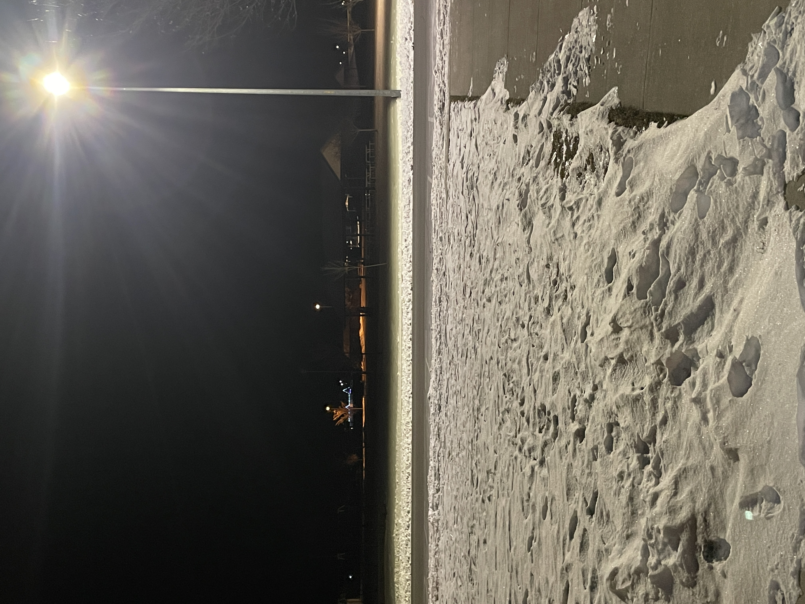

I don't know what to do anymore. I want to tell my best friend about what I've done and for him to accept me. But I feel as if what I did was to great for forgiveness or any scrap of empathy. The longer I hide it the deeper I dig my grave, but I can't make myself come out and say it.
I'm scared, I'm tired, I'm hurting, and I can't see a path forward that ends well for everyone involved.
2025-02-03 06:58 MST
I slept weird last night and did something to my back. It hurts to stand, sit, walk, anything that needs my back. But even though I feel like I'm dying, I must continue to do what I have to. I have to do everything, and no matter what, convince people it's easy for me, so I don't disappoint anyone with my lack of skills. Keeping up the act is driving me insane. Both the acts of keeping my problems hidden and not letting anyone find out the truth behind this journal.
No one can know.
It would kill their faith in me.
It would kill me.
2025-01-31 09:09 MST
I don't think I'll be posting much on Reddit. I might drop in once a week or so to answer some questions but not much more. I'd rather keep everything I have to say right here in my journal or this site will just lose it's meaning if I can do the exact same thing over on Reddit.
2025-01-31 07:33 MST
If my friends find out about what I did, I have no idea how they will react. I can only assume that I would lose them since I broke their trust and tricked them. It'll just be like going back a couple of years to when I barely even talked with my best friend. He's a caring and understanding person but with what I've done I can't be so sure that he won't stay like that. He has every reason to absolutely detest and hate me. I have no exuse for what I did and everyone has the right to hate me.
2025-01-29 08:12 MST
My dad is pissed that I didn't want to participate in scripture study. I quote from him, "This is my house so you will follow my rules. This means that you will wake up at 6 and participate in the lesson."
It's kinda hard to participate in something you don't believe in and are being force to do. I thought I had freedom of religion but I guess that right doesn't exist anymore too.
2025-01-27 15:18 MST
Made a subreddit on request from the ✨fans✨(aka a single person that called me gay moments later)ThatOneHumanoid
2025-01-24 08:31 MST
The pain from self-inflicted injuries feels different any pain inflicted by others. The difference between being forced to feel pain versus the want to feel that pain. It's freeing, like I can finally choose what I want instead of it being chose for me. Just like any other injury, it hurts, but not as much as it hurts to, for example, have a box-cutter slip and cut yourself suddenly.
2025-01-23 07:42 MST
I really overestimated how many people read this. The traffic statistics say my page was visited 18 times just yesterday but half of them where just me checking that it works after trying things with images. There might be no one at all reading this.
Well, to anyone that is reading this, forget about the scavenger hunt thing. That was just a stupid attempt to get people to stay and read my narcissistic and self-absorbed problems. And because of that, I'm sorry. Sorry for making my problems seem bigger than they are. Sorry for having to read this sad excuse for my life. Sorry for ever making you worried about me.
Just forget about this page, me, and my problems, and go on with your own life. I'll be fine alone, like I've been for years.
2025-01-21 20:59 MST
To the few people who view my journal, I'd like to send you on a geo-guesser scavenger hunt thingy. I'll post a photo of a location, then you will try to find the address or take the same photo from the same spot, and post it here:
Then if I can find the time too, I'll post a second location, this time with something physically there. A paper with a encrypted message, a QR code, link, etc.
So here is the first image, good luck.

2025-01-20 16:16 MST
I don't fear death, I fear what I would leave behind. I fear that I if I die early I would be leaving all my friends and the people that rely on me in a hard spot. I wouldn't be there to help them with their problems, to talk with them when they need it most. I would be abandoning them without knowing if they could continue on without me.
Thats why even through all the muck the world throws up I will push forwards, never for personal gain, always for others until the day I can finally rest in peace knowing I've helping every last person I could.
2025-01-16 10:43 MST
You want to know what I thought after posting these? Wouldn't it be fun if I post like 10 times in 2 hours just to freak people out. I'm a terrible person.
2025-01-16 10:27 MST
Is this whole site just a sham for me to get a reaction out of people? Or is it how I actually feel?
2025-01-16 10:16 MST
Would you like to know what I think about every second of the day?
Am I actually like this, someone so damaged they can't even trust themselves? Or am I just "faking it for the views?" Am I just a narcissistic, attention seeking, manipulative, liar that uses other people like dollar store tools?
On one hand I feel like the damaged person portrayed on this site on the other I feel like I'm actually just a terrible person that uses other people for personal gain.
What do you think I am?
2025-01-14 07:32 MST
How do I tell my parents I'm not religious? I should wait until I'm fully independent then tell them, but the longer I stay the more unsafe I feel. Everyone claims that it's the best and friendliest religion there is. I have found that to be extremely false, even my own parents mentally and physically harm me.
2025-01-10 07:45 MST
I hate shaving my knees with the crappy disposable BIC razors I have. They skin my knees like they're potatoes. I gotta buy more heads for my Gillette razor and trash the BIC ones.
2025-01-07 11:13 MST
The american pledge of allegiance is very ironic. "Liberty and Justice for all" Like that happens anymore. We may be one nation but we are a divided people.
2025-01-06 14:18 MST
Update on the previous post, nothing has gotten better, in fact probably worse. My average asleep time goes from 03:30 to 06:00. I just can't sleep. Even melatonin won't help me.
Even worse news. I was shaving my legs and cut myself. Not like a little nick or scratch, but a half-inch long cut. It bled for awhile and hurt like heck. But it felt really good, the pain was intoxicating, like a drug, it felt good. I'm sure you can see where this is going.
I'll try to get back on schedule and post more regularly.
2025-01-02 00:54 MST
Christmas break and my family really threw a wrench into me writing here. But I'm back now so its ranting time. So first some statistics, in 2024 over 106,000 lives were lost to suicide globally. And I say over because many countries, states, territories, etc. try to downplay how bad it is. And every death has yet to be recorded and published in charts.
On a different note, its finally 2025, let's hope for the best. My new years resolution is too stop being a terrible friend that guilt trips and lies to get what I want. But do I really do those things? Kinda hard to figure that out with imposter syndrome. But I might not have that either, and according to Dr. Internet doubting having imposter syndrome is a sign of having it. Very fun.
Now for the more serious stuff. My insomnia has gotten to its highest it's ever been and doesn't seem to be slowing down any time soon. Winter depression is making its rounds again, hopefully not for long. I can tell I'm not doing good with stress and my mental health since even though I take daily showers and have a pretty good routine I still have bad breath and body odor. I have so many people I can talk too at a moments notice but I still feel, alone. Even my bestfriend since forever is drifting away from me, my bff, my longest friendship, my partner in crime, my go to for advice. If he goes I will quite literally have no one I can trust. Back to insomnia, the only way I've been able to sleep is particularly funny to me during typing this out. I listen to some depression comfort asmr and cry myself to sleep. I know, I know, just hilarious isn't it? After committing this that's what I'll be doing.
To anyone reading; Life is amusing, so have fun and take care of yourself.
2024-12-27 12:06 MST
I want people to use me, dress me up, do my hair, paint my nails, etc. I don't care if others say its weird. It makes me feel wanted.
2024-12-19 08:51 MST
I was once asked what the most terrifying monster is. I couldn't find a good enough answer for that moment. Skeletons, zombies, SCPs, ghosts, giants, leviathans, Cthulhu, etc. We usually visualize a monster based on the common definition. The Merriam-Webster Dictionary defines a monster as, “An animal of strange or terrifying shape, a mythical monster, a sea monster.” But there are more than looks that make something a monster.
I now know that answer to this question. The majority of the deadliest disasters and horrors were caused by this monster race. They can take extreme damage, lose half their blood and still live on. They have survived multiple close calls with extinction and then doubled past their original population. Anything that crossed its path either had to move aside or be destroyed. They are so persistent and efficient that any prey they chase ends up giving up out of exhaustion. They kill their own kind based on petty biased reasoning. They drove at least 150,000 to 260,000 of all known species to extinction. Their own advancement caused their own ecosystem to decay and die.
Humans.
2024-12-16 07:27 MST
I lie to my friends and I make my life seem so much better than it really is. I just don't want to be a burden or take more than I need from them. I don't want them to worry about me, but constantly lying to them tears my own heart into pieces. I feel so so so terrible for lying to them and hiding my problems.
2024-12-12 09:59 MST
Why is it that I always become introspective, depressed, and anxious at the most random times. I caught my reflection in a powered off tv screen and went off on at least a 45 minute deep dive into how much I hate mirrors and photos of my self. Anything that shows how I look, I absolutely hate it.
2024-12-10 21:48 MST
I rediscovered an audio clip that I believe describes the two sides of me.
The first one is the person I want others to see. Vulnerable, nice, polite, the textbook prince of perfection. The second one is who I can be if I want to, ruthless, apathetic, cunning. Its fun being able to switch and use their skills. But honestly the second ones gotta die off.
2024-12-08 22:49 MST
Now I'll start posting daily that the weekend is over, hopefully. I got over my cold finally, still got a ting cough but I think that's just from the cold thin air.
2024-12-05 23:11 MST
I think that I prefer to stay quiet and not speak so I have no chance to hurt my friends or myself. So in conclusion, this journal is good for me according to my main friend group's designated therapist(me).
2024-12-05 3:00 MST
I've been posting less frequently due to Thanksgiving throwing off my schedule. I hope to post daily from now on.
2024-12-02 14:51 MST
I caught a cold and its not treating me very well. Still had to go to school cause the American education system is just so great isn't it.
2024-11-30 20:09 MST
My body is too small for my emotions. How do I stop it from spilling?
2024-11-26 07:41 MST
I know that there are plenty of people who have it worse than me, I won’t ever say that I’m in the worst condition there is. But what I will say is I have the hope that I can bring those in a deeper pit than me, out of those pits.
2024-11-25 13:23 MST
Seasonal depression is hitting hard. But I'll hit it back harder. I was hoping to keep this journal happy and carefree for much longer than its been. Maybe a month or two. Its only been a week.
2024-11-25 09:11 MST
I believe that I look, smell, sound, etc. like the worst person alive, in return, no one can hurt me when they call me names. No one has ever hurt me, since no one can hate me more than I can.
2024-11-24 20:54 MST
I look all around me and see humans everywhere, but no humanity.
Where did it all go?
2024-11-22 15:11 MST
Not being able to love is hard. For some context I just can't feel attraction, I have no idea how attraction feels, or how it works. So I'm constantly in a state of paranoia over it. Just like this:
• I say something
• They say something a little teasing/textbook flirting stuff
• I think I said something flirty as well
• Absolute terror of if I just said something I might not have wanted too.
I'm led to constantly second-guess everything I say. I'm also bad at getting any and all clues and/or social cues. They can say something so flirty and teasing and I just won't notice.
I wish I could get the cues, it would make life so much easier. And at the same time, harder, I would have to deal with conflicting emotions more than I already am.
2024-11-21 21:31 MST
Oh the pressure, the pressure to be perfect. Every single thing you do needs to be perfect and spot on...
...or else...
It's always, "Get and A," "Be the top of your class", "You can do this!", "You can do better than that!", "Why can't you be as good as you where last trimester?", "You never try your hardest and thats why you are failing.", "IF I SEE A SINGLE 'F' I WILL...", "If you don't do your homework(English, math, chemistry, AP classes) and chores you're grounded! Also watch your siblings, I'm going to take a nap."
I know I should respect my parents and the work they have done to give me the life I have. But my own sanity is not an equal trade.
Its day like this that I'm glad my mother lost her voice.
2024-11-20 13:42 MST
Lunch was fun. I got to listen to music with one of my friends. One person sitting nearby came up to me after the lunch bell and said, "You two would make a cute couple."
The stranger's friend then replied, "Thats gay."
2024-11-19 14:25 MST
When you see someone that needs help there’s only two options for who’s gonna help them. You or no one. If you believe that you don’t have to help since someone else will, then what stops others from thinking the same until not a single person helps. If everyone chooses to wait instead of helping, who’s gonna save the person ready to jump into the road this afternoon?
2024-11-18 21:37 MST
I find myself drawn to only writing in my diary/journal digitally. Transcribing from physical to digital and vice versa has become an unwelcome task. I can also type words down much faster than I can write.
On that note, I researched the difference between a diary and a journal. A diary is a factual record of daily events, while a journal is for reflection and exploration of thoughts and emotions. So this record would be more of a journal than a diary.
2024-11-18 20:10 MST
Hurting someone is easy.
Like throwing a rock into the ocean.
But did you even stop to think,
How deep the rock could go?
2024-11-17 21:15 MST
Yay, my website is now built and hosted. Decided to make it look scrapbook, notebook-ish. Its URL is thatonehumanoid.github.io. I'm excited to keep this going. I'll figure out how to add pictures later. Shouldn't be too hard, it's just HTML. If some of this sounds weird or out of chronological order thats because I'm keeping a physical notebook as well.
2024-11-16 21:34 MST
First time journaling or writing a diary entry. Whatever works. Hopefully I'll make this a habit. And get better handwriting. I'll probably have longer entries and short burst entries. A sentence describing something, a feeling, an object, etc. I think a website would be cool. I'd post my stuff there. I'll do that tomorrow.